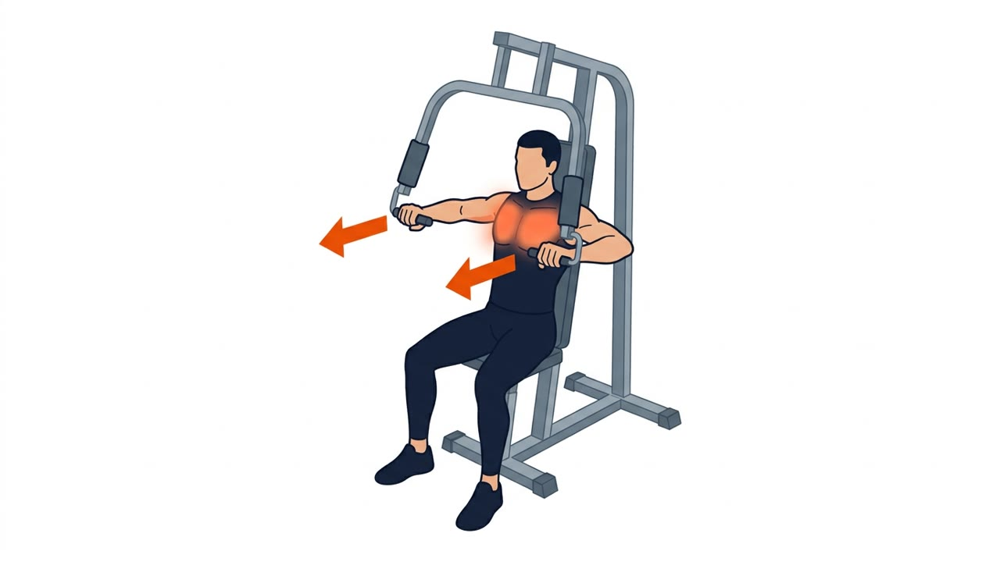

イラストのように肩甲骨を寄せて、胸の力で前へ押し出していきましょう！
任意のステップをタップすると、そこから即座に再生できます
毎日自動でローテーション選出されます。お好みの動画をワンタップで固定・切替できます。
週間スタンプ・開脚レベル・Notion「🏃 健康ダッシュボード」＆ライフログ自動同期
セッション完走時（または上のボタン）で、Notion「健康ダッシュボード」とマインドフルネス瞑想ログ・全端末へ自動同期されます。
スマホ・タブレット・PC・出張先ブラウザ間でウェイト・達成記録・開脚Lv・瞑想を自動同期します
Notion「🏃 健康ダッシュボード」内の専用ワンクリック同期リンクから開くと、自動でこの端末のブラウザに同期キーが設定されます。
新しい端末で手動連携する場合は、Notion「🏃 健康ダッシュボード」に記載の同期キーを入力してください（一度保存するとこのブラウザに記憶されます）。